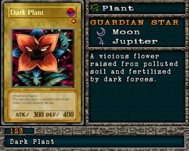

#123 · Monstro
Dark Plant
ATK300
DEF400
Nível1
TipoPlanta
AtributoDark
Guardian StarsLua / Júpiter
Senha13193642
Star Chips15
Quem dropa no Mod 13
| Duelista | Rank | Chance | Média | |
|---|---|---|---|---|
| B/C/D | 3,71% 76/2048 | 1 em 27 duelos | ||
| S/A-POW | 3,61% 74/2048 | 1 em 28 duelos | ||
| S/A-POW | 3,52% 72/2048 | 1 em 28 duelos | ||
| B/C/D | 3,52% 72/2048 | 1 em 28 duelos | ||
| S/A-TEC | 2,93% 60/2048 | 1 em 34 duelos | ||
| B/C/D | 2,78% 57/2048 | 1 em 36 duelos | ||
| S/A-TEC | 2,73% 56/2048 | 1 em 37 duelos | ||
| S/A-TEC | 2,59% 53/2048 | 1 em 39 duelos | ||
| S/A-POW | 2,54% 52/2048 | 1 em 39 duelos | ||
| S/A-TEC | 1,95% 40/2048 | 1 em 51 duelos | ||
| B/C/D | 1,61% 33/2048 | 1 em 62 duelos | ||
| S/A-POW | 1,07% 22/2048 | 1 em 93 duelos | ||
| B/C/D | 1,03% 21/2048 | 1 em 98 duelos | ||
| S/A-POW | 0,98% 20/2048 | 1 em 102 duelos | ||
| S/A-TEC | 0,93% 19/2048 | 1 em 108 duelos |
Quem dropa no jogo original
| Duelista | Rank | Chance | Média | |
|---|---|---|---|---|
| B/C/D | 3,71% 76/2048 | 1 em 27 duelos | ||
| S/A-POW | 3,61% 74/2048 | 1 em 28 duelos | ||
| S/A-POW | 3,52% 72/2048 | 1 em 28 duelos | ||
| B/C/D | 3,52% 72/2048 | 1 em 28 duelos | ||
| S/A-TEC | 2,93% 60/2048 | 1 em 34 duelos | ||
| B/C/D | 2,78% 57/2048 | 1 em 36 duelos | ||
| S/A-TEC | 2,73% 56/2048 | 1 em 37 duelos | ||
| S/A-TEC | 2,59% 53/2048 | 1 em 39 duelos | ||
| S/A-POW | 2,54% 52/2048 | 1 em 39 duelos | ||
| S/A-TEC | 1,95% 40/2048 | 1 em 51 duelos | ||
| B/C/D | 1,61% 33/2048 | 1 em 62 duelos | ||
| S/A-POW | 1,07% 22/2048 | 1 em 93 duelos | ||
| B/C/D | 1,03% 21/2048 | 1 em 98 duelos | ||
| S/A-POW | 0,98% 20/2048 | 1 em 102 duelos | ||
| S/A-TEC | 0,93% 19/2048 | 1 em 108 duelos |
A chance vale por duelo vencido com o rank indicado. "1 em N" é a média de duelos para conseguir a carta. S/A-POW = vitória por força; S/A-TEC = vitória técnica; B/C/D = ranks baixos.